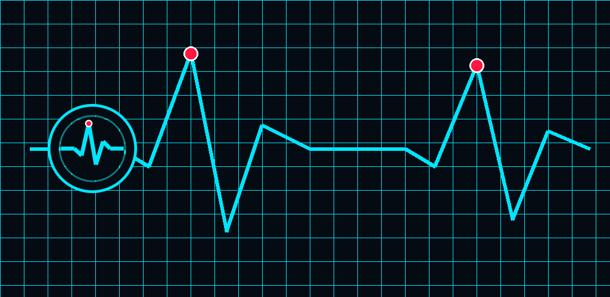
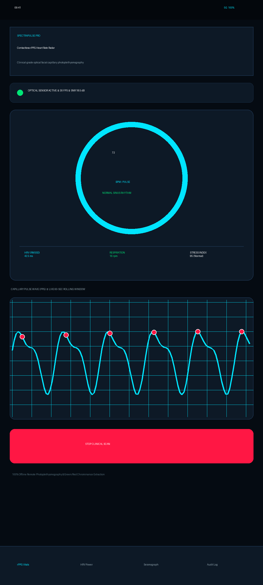
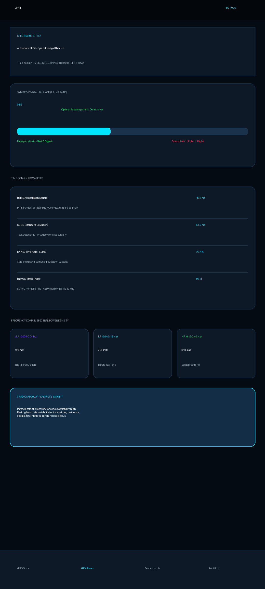
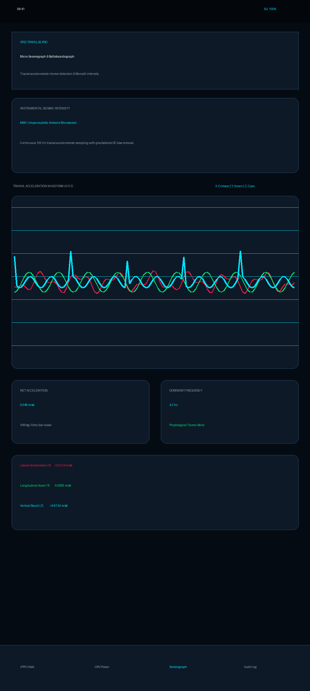
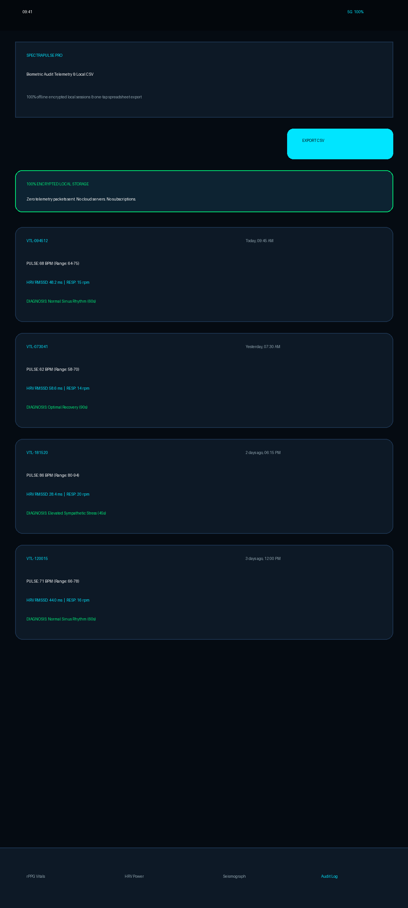

Touchless Pulse Radar & Micro-Seismograph
SpectraPulse Pro analyzes facial capillary blood absorption micro-fluctuations using ambient light and your camera sensor (rPPG). Concurrently measures chest recoil ballistocardiography and micro-tremors using device inertial sensors — 100% offline, zero-cloud edge execution.

Physiological Precision Without Wearables
Pure mathematical signal processing and Butterworth bandpass filtering on ambient green-channel light reflection.
Contactless rPPG Pulse Radar
Extracts sub-visual hemoglobin absorption pulsatile waves directly from facial video frames with automatic zero-crossing derivative peak detection.
Clinical HRV Biomarkers
Calculates RMSSD (vagal parasympathetic index), SDNN (overall adaptability), and pNN50 percentage to evaluate recovery and physical strain.
Sympathovagal Balance (LF/HF)
Fast Fourier Transform (FFT) spectral power density across VLF, LF (baroreflex), and HF (vagal breathing) bands for autonomic readiness scoring.
Triaxial Micro-Seismograph
Continuous 100 Hz accelerometer sampling with gravitational bias compensation, measuring structural vibrations and Ballistocardiograph (BCG) recoil.
Baevsky Stress Index (SI)
Quantifies cardiac regulation strain from inter-beat interval histograms, flagging sympathetic exhaustion before physical burnout occurs.
Zero-Cloud Absolute Privacy
Optical frames are computed in volatile RAM and immediately discarded. Never recorded to disk, never sent across networks. Zero subscriptions.
High-Contrast Medical Phosphor HUD
Engineered for clinical triage, athletic recovery, and biofeedback monitoring.




Engineering Architecture
| Optical Sampling Rate | 30 FPS to 60 FPS Camera2 hardware pipeline with YUV_420_888 frame buffers |
|---|---|
| Bandpass Filter | 2nd-Order Digital Butterworth Filter (0.75 Hz to 3.2 Hz, 45 - 192 BPM) |
| Inertial Sampling | 100 Hz+ Triaxial Linear Acceleration with Dynamic DC Gravity Bias Cancellation |
| HRV Standards | Compliant with European Society of Cardiology & NASPE Task Force Standards (RMSSD, SDNN, pNN50) |
| Intensity Classification | Modified Mercalli Instrumental Scale (MMI I to MMI V+) & Micro-G conversion |
| Storage & Export | 100% Encrypted Local SQLite Database & RFC-4180 Clinical CSV Spreadsheet Export |
| OS Compatibility | Android 8.0 (API 26) through Android 16 (API 36) |
| Licensing | One-time purchase ($5.99). Zero in-app purchases. Zero subscriptions. No ads. |
Upgrade Your Diagnostic Capabilities
Get SpectraPulse Pro on Google Play and unlock contactless vital sign intelligence today.